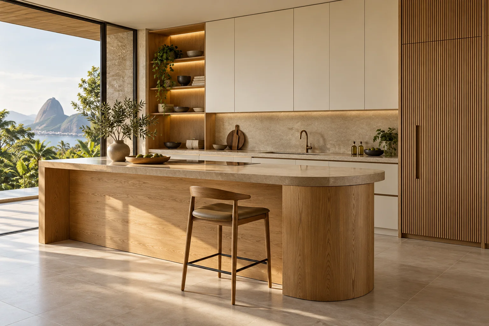

Cozinha · Madeira e tons claros
MÓVEIS PLANEJADOS · ESPAÇOS COM IDENTIDADE
Morar
do seu jeito.
Móveis que acompanham sua rotina. Texturas, organização e escolhas para fazer do espaço um lugar seu.

01 / O COMEÇO DE UMA CASACOZINHA INTEGRADA
01 — UM NOVO OLHAR PARA O ESPAÇO
Qual ambiente
vamos imaginar?
Explore as possibilidades. Cada ambiente pede soluções que façam sentido para quem vive nele.
COZINHA · PLANEJADA PARA A ROTINA
O coração da casa.
Armários que organizam o uso diário e combinam madeira com superfícies neutras. Uma referência para planejar circulação, equipamentos e armazenamento.
Organização por usoIntegração
Ambientes ilustrativos. O projeto final considera medidas, necessidades e viabilidade de execução.
02 — REFERÊNCIAS PARA O SEU PROJETO
Ideias para
levar com você.
Escolha seus favoritos. As referências salvas entram no resumo do seu projeto.
Dormitório · Closet
Tudo encontra seu lugar.
Home office · Funcionalidade
Espaço para suas ideias.
Living · Integração
Sua rotina, bem recebida.
Salve as referências que combinam com seu projeto.
Usar no meu pedido ↗Ambientes e imagens gerados por IA para esta demonstração. Não representam obras executadas ou produtos disponíveis.
03 — BONITO TAMBÉM É FUNCIONAR
Cada centímetro
tem uma intenção.
O desenho começa pelo que você precisa guardar, alcançar e usar todos os dias.
- 01
Organização por dentro.
Prateleiras, divisões e gavetas pensadas para os objetos da sua rotina.
- 02
Uma composição por fora.
Portas, puxadores e acabamentos que conversam com o restante do ambiente.
- 03
Um projeto para o espaço.
Medidas, circulação, tomadas e equipamentos considerados na proposta.
04 — SUA PALETA, SEU PONTO DE PARTIDA
Texturas que
mudam o clima.
Escolha uma direção de acabamento para incluir no seu briefing.
Seu ponto de partida: Madeira clara
Uma direção acolhedora, que valoriza a presença visual da madeira e dos tons claros.
Cores e texturas são referências de estilo, não amostras de um fabricante. A seleção final é feita com o catálogo da empresa.
05 — UM PROJETO CONSTRUÍDO EM CONVERSA
Da sua rotina
para o seu espaço.
Um briefing claro ajuda a transformar referências em escolhas para o projeto.
Escutar e entender.
Ambientes, rotina, preferências e o momento do imóvel orientam o primeiro contato.
Desenhar possibilidades.
Medidas, soluções internas, materiais e ferragens precisam ser alinhados com o responsável pelo projeto.
Combinar a execução.
Escopo, investimento, medição, fabricação e instalação são definidos na proposta da empresa.
06 — VAMOS COMEÇAR PELO QUE IMPORTA
O próximo
ambiente
pode ser o seu.
Conte um pouco da sua ideia. Organize as escolhas em poucos passos para começar uma conversa sobre o projeto.
123
Seu pedido, organizado.
Esta é uma prévia da mensagem para o atendimento. Nenhum dado foi enviado. Em um site contratado, o contato é configurado com o WhatsApp da empresa.
DÚVIDAS SOBRE O COMEÇO
Antes de imaginar,
pode perguntar.
Posso começar sem ter a planta do imóvel?
Sim. Você pode descrever os ambientes e o que procura. Planta, medidas e necessidade de visita técnica são alinhadas depois com a empresa.
Posso planejar apenas um ambiente?
Você pode indicar um ou mais ambientes no briefing. A empresa avalia o escopo e apresenta as condições para o seu projeto.
As cores mostradas são acabamentos disponíveis?
Não necessariamente. São referências ilustrativas de estilo. Marcas, padrões, ferragens e disponibilidade devem ser confirmados no catálogo da empresa.
Como ficam preço, prazo e montagem?
Essas condições dependem das medidas, materiais, ferragens e escopo. Precisam ser detalhadas na proposta. Esta demonstração não representa condições comerciais de uma loja real.